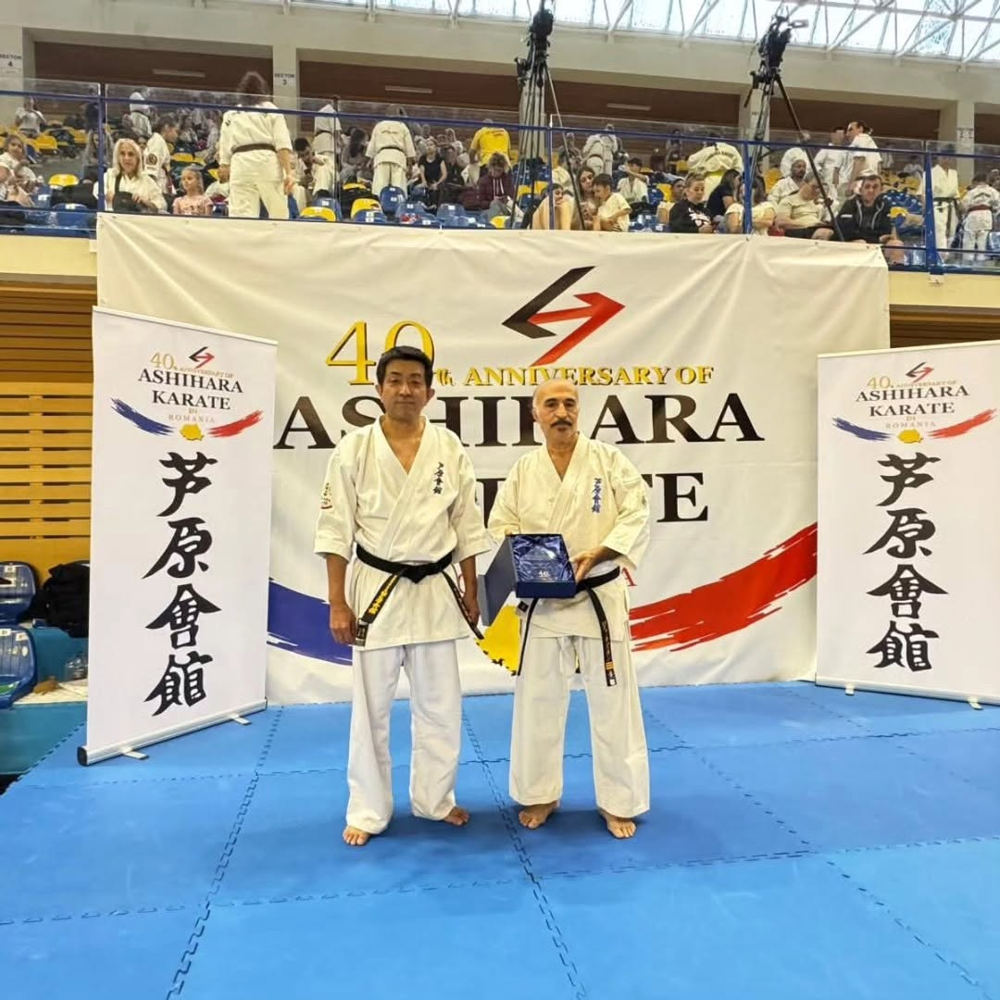
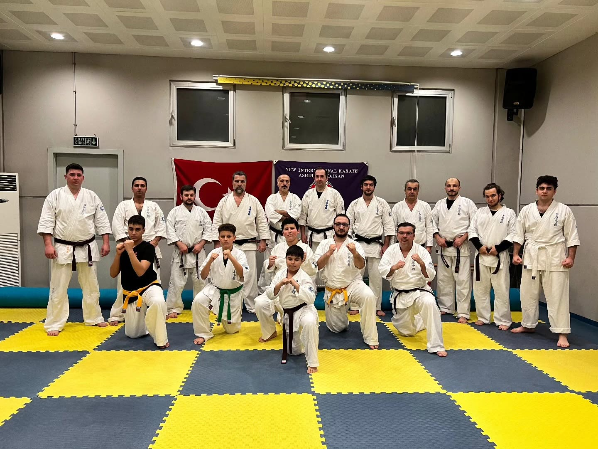

Ümraniye'den Bugüne
Sensei Ziya Özkan'ın 1983'ten bugüne uzanan yolculuğu ve Ashihara Karate'nin Türkiye'deki hikayesi.
Sensei Ziya Özkan
Ziya Özkan, 1969 doğumlu, evli ve iki çocuk babasıdır. Dövüş sporlarına 1983 yılında tam temaslı Kyokushin Karate ile başladı; 1983-1992 yılları arasında korumasız çok sayıda tam temas maçında mücadele etti ve ilk siyah kuşağını 1988'de aldı.
1991 yılında Ümraniye'de (Çakmak Mah.) ilk profesyonel Ashihara Karate salonunu açtı ve o günden beri aralıksız Ümraniye'de antrenörlük yapıyor.
NIKO Japonya'dan 3. Dan, Türkiye Karate Federasyonu'ndan 7. Dan ve 3. Kademe Antrenör derecesine sahiptir; Ashihara Fight Karate çatısı altında öz savunma ve dövüş eğitimi veriyor.
"Savaşta silahın süslüsü değil, işe yarayanı makbuldür."


İlk Ashihara Salonu
1991 yılında Ziya Özkan, Ümraniye'nin Çakmak Mahallesi'nde Türkiye'nin ilk profesyonel Ashihara Karate salonunu açtı. O günden bu yana antrenörlüğünü aralıksız Ümraniye'de sürdürüyor.
Bugün dersler İnkılap Mahallesi'ndeki Halide Edip Mesleki ve Teknik Anadolu Lisesi spor salonunda, haftada iki gün, özel eğitim seviyesinde küçük gruplar halinde yürütülüyor.
Otuz Yılı Aşan Emek
Ziya Özkan, NIKO Japonya'dan 3. Dan ve Türkiye Karate Federasyonu'ndan 7. Dan ile 3. Kademe Antrenörlük derecesine sahiptir; Ashihara Fight Karate çatısı altında öz savunma ve dövüş eğitimi de veriyor.
Okulun 40. yıl kutlamalarına katılımı, Türkiye temsilciliğinin uluslararası Ashihara camiasıyla kurduğu bağın bir göstergesi oldu.
Ümraniye Yolculuğu
Kyokushin'e İlk Adım
Ziya Özkan, tam temaslı Kyokushin Karate ile dövüş sporlarına başlar.
İlk Siyah Kuşak
Yıllar süren tam temas maçlarının ardından ilk siyah kuşağını alır.
Ümraniye'de İlk Dojo
Çakmak Mahallesi'nde Türkiye'nin ilk profesyonel Ashihara Karate salonu açılır.
Sürekli Büyüme
Dojo, çocuk, genç ve yetişkin sporculara sabaki disiplinini kazandırmaya devam eder.
Ashihara Karate Türkiye
Ümraniye Ashihara Karate Okulu, Türkiye'deki Ashihara mirasını sürdürüyor.